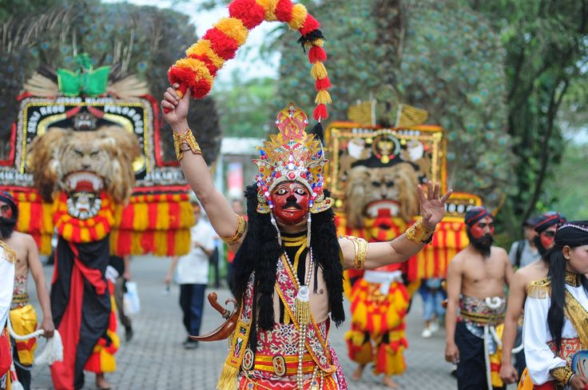

Wisata
Gunung BROMO
Gunung Bromo, di Jawa Timur, adalah gunung berapi ikonik dengan pemandangan kawah
aktif, lautan pasir, dan matahari terbit yang menakjubkan, serta kaya akan budaya suku Tengger.
More Details »

Kuliner
MAKANAN KHAS JATIM
Makanan khas Jawa Timur bercita rasa kuat, seperti Rawon dengan kuah kluwek, Rujak Cingur
berpetis, Lontong Balap, Pecel Madiun, dan Sate Madura yang legendaris.
More Details »

Seni
Tari Tradisional
keberagaman tari di Jawa Timur mencerminkan kekayaan budaya dan tradisi masyarakatnya. Dengan
gerakan yang dinamis, kostum yang indah, dan cerita yang sarat makna.
More Details »
Wisata
Wisata-Wisata memukau yang ada di Jawatimur
Kuliner
Makanan-makanan khas jawatimur yang lezat dengan cita rasa khas
Seni Tari
Keindahan pertunjukan tari yang memukau dan unik di jawa timur